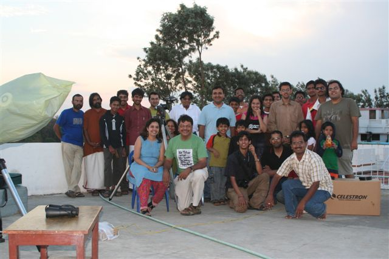

Report : Yelagiri star party
By p6; Published 24 Apr 2007
Yelagiri proved to be our lucky venue yet again. Our succesful star party in association with TANASTRO concluded last afternoon and it's only left us thirsty for more of these. The event was attended by 20+ members of our society and 10+ from TANASTRO and will rank amongst the succesful amateur astronomers' gatherings here in south.
Hotel O' Nila, Yelagiri was perhaps all astronomy on the night of April 14th. Coming exactly 3 months (14th of January) after our successful stint at observing Comet Mcnaught (C/2006 P1) - designated as The great comet of 2007, Yelagiri and the stunning skies it harbours managed to provide a scintillating arena for our observing and photographic exploits yet again. While the observing domain was powered by a 12" f/4.5 Dob, a 5" f/8 alt-az, an 8" f/8 equatorial and a 6" f/8 equatorial; The photographers were armed with two Meade 10" LX 200 GPSes, a Celestron C-8, a Meade ETX-125, a 4" f/4, a Celestron 9.25" and a 4" Celestron Maksutov-Cassegrain.

The attendees included our friends Dr Suresh and family, Dr Anand, Vijay Kumar, Raj Sattanathan, Shubhashish, Manivannan and many more Whilst our lot included Myself, Hemant, Amar, Naveen, Akarsh, Utkarsh, Byju and Jr, Venkatesh and family, Dr Balaji and family, Omkar, Deepak, Dr Channa Raju, Yashaswi, Pavan Kumar, Mayur, MuraLi and Krishnan. My sincere apologies to those that aren't listed here. There were far too many names to recall and quote by memory.
 Our batallion of cars, people and equipment gathered at Yelagiri by about 4PM and the sight of the skies looked more sorry and worrysome than anything else. We however witnessed a spectacle no later than 1 hour after arrival that perhaps made the whole trip worth all by itself. While the sky looked dark and not too beautiful. Here was a flawlessely semicircular rainbow that streched from horizon to horizon and atleast 40 degrees in altitude. While rainbows or even the sight of what it's associated with is no good omen for any kind of astronomy, We'll all have to admit that we thorougly enjoyed it. There was also a concentric second rainbow that made it further more magnificent, although not as conspicuous. Things however took a turn for the better after this and the clear blue windows in the cloudy sky became bigger and higher in number.
Our batallion of cars, people and equipment gathered at Yelagiri by about 4PM and the sight of the skies looked more sorry and worrysome than anything else. We however witnessed a spectacle no later than 1 hour after arrival that perhaps made the whole trip worth all by itself. While the sky looked dark and not too beautiful. Here was a flawlessely semicircular rainbow that streched from horizon to horizon and atleast 40 degrees in altitude. While rainbows or even the sight of what it's associated with is no good omen for any kind of astronomy, We'll all have to admit that we thorougly enjoyed it. There was also a concentric second rainbow that made it further more magnificent, although not as conspicuous. Things however took a turn for the better after this and the clear blue windows in the cloudy sky became bigger and higher in number.The event finally did get kickstarted soon after dark and venus was the object offering the first sights of the night. The planet sported somewhat of a 'semi-gibbous' phase and was especially a sight through the 12" at 270X on a 4.8mm Nagler. Orion Nebula, M41, M35, M36, M37, M38, M79 provided fairly good views despite the annoying lights at the hotel. To get away from it all, about 5 of us went outside the hotel and off-road until we had no lights in view. The difference in sky contrast was obvious and for the better. We managed to photograph Orion, Canis Major and the Ursa Major regions before we returned to the hotel and retired for dinner.

After we filled ourselves, Another bunch of us decided to make the trip the off-road spot we'd found yet again. Armed with modest binoculars, tripods and cameras.. We managed to enjoy some stunning sights of the southern constellations of Centaurus, Crux and the rising scorpius. Omega Centauri especially was an enthralling sight even with binocuars. M81 and M82 were binocular objects with ease and so were M4 and M80 in Scorpius. The saggitarius star cloud rose soon enough and appeared as a substantial haze even low down the horizon. The thick nebular regions of trifid and lagoon and the star clouds of M7 and M6 were especially tittilating sights even as low down as they were. We however had to make it back to the hotel as approaching clouds of haze managed to deter the paranoid ones amogst us. However, they cleared no sooner than we had set back towards the hotel, but we refrained ourselves from the urge to stay back longer. Amongst the regions photographed were the crux and the centaurus regions, Scorpius and Saggitarius. The transformation of the sky back at the hotel was still aparrent even though the lights had been switched off.
Back on the Hotel terrace, the people around the telescopes were yet to recover from the shockingly marvellous sights they'd got a peek at. Sombrero Galaxy had been about as good as a grey scale photograph with people having been able to make out subtelities of the like of the the aparrent tilt in the galactic axis and the complete extent of the galactic halo. The whirlpool galaxy was about as good if not better. The galaxy had appeared right as in the HST images, with the spiral arms, the companion galaxy and innumerable other subtle features.
We returned at about this juncture. Objects to follow were Saturn and the Saggitarius region. Saturn was quite something with the 12" dob at 570X (4.8MM Nagler + 2X Barlow). The sight was positively stunning, breathtaking and beyond words. The planet almost flew through the eyepiece field uncontrollably and it was challenging to observe it for long tracking it manually in alt-azimuth. The mount had developed a bearing problem which only further added to our woes. However, even with the limited time we could get at the eyepiece where the planet and it's rings managed to virtually cover the field, We were reasonably convinced about having managed to feel the existence of the encke gap. Cassini division was extremely pronounced and was conspicuous enough to be noticed even at first sight.
Up next were the saggitarius DSOs that were a treat to watch. As we hurried through the innumerable open clusters in the regions, There were also the likes of M22 which were as stunning as ever. Lagoon Nebula and the cluster was again at it's brilliant best whilst Trifid wasn't as huge a change as we expected from our last sighting at CREST. The dark lanes in the same stood out despite the mediocre background saggitarius was in being low down. Swan Nebula was impressive and again matched upto a HST image with the UHC on. Eagle Nebula was something of a first sighting for all of us to whom it had become but synonymous to the cluster it's associated with. There was also an extremely hallucinating indication of dark lanes amidst the nebula that extended from the top of the field with rarer star density unto the thicker part of the cluster below. Potential candidates for the pillars of creation we assume. We later confirmed this with Dr Suresh's image which he had managed to obtain while we were at observing it.
The most stunning sight of the night as I'd rank it was undoubtedly Omega Centauri. Being as high up as it could get for it's low southerly declination, The globular provided amongst the most picturesque views of a globular we've ever managed to see.. even in the pictures. Resolved totally and immaculately, The sight to the eye was a total treat as it managed to gather the biggest queue of all. Nearly everybody who saw it could only come up with a statement of exclamation.
Globulars of Opihuchus, The wild duck cluster M11.. all provided fairly good views. Jupiter was again as good as ever. Amar took up the reins of the 12" after this juncture and picked out his eleventh comet - the recently discovered 7th Magntiude Lovejoy. The comet had a perfectly spherical coma and resembled a moderately bright globular cluster and added to all our comet counts. Amar also gave a shot at comet maccholz later in the morning but without success. Yelagiri has yet again proved to be our happy hunting ground so far as comets go.
While that was merely the observing report, Dr Suresh and co had been having a field day at work. The marathon photography session had thrilled them about as much as we had been observing. Dr Suresh managed to get 45 minutes of exposure of his pet - The rosette nebula in the evening. Venkatesh, Pavan Kumar, Dr Anand had also been at their photographing exploits. We expect them all to publish their results soon. We had a peek preview at Dr Suresh's Eagle Nebula and it was simply stunning although he'd have preferred a longer exposure. The yelagiri skies were simply a photographer's paradise as Dr Suresh affirmed - that the transition from the Chennai sky unto Yelagiri accounted for almost a ten fold difference in quality and henceforth the time of exposure. Shashank's pictures are out and he's yet again proved himself to be a prodigious revealation in the art of manual tracking thats just an extreme challenge even whilst piggybacking. Please watch out shashank's album for updations. We expect him to upload the pictures shortly.
We concluded the session shortly after with everybody retiring to their cottages to catch 40 winks to muster up enough energy to drive back home. Some however, hit the sack on the terrace of observing itself. The morning turned out to be a useful interaction amogst us all - with talks on various things. While Krishnan, Dr Channa Raju, Venkatesh and family left early in the morning.. We stayed on longer. Mr Murali, Dr Balaji and family, Amar, Byju and co started back home in the afternoon. Hemant, I and akarsh took leave from Dr Suresh and co in the late afternoon after we managed to haul the equipment down from the terraces by around 4:45PM. The drive back home was swift excepting for the brief crawl at Hosur. We reached home at about 9PM.